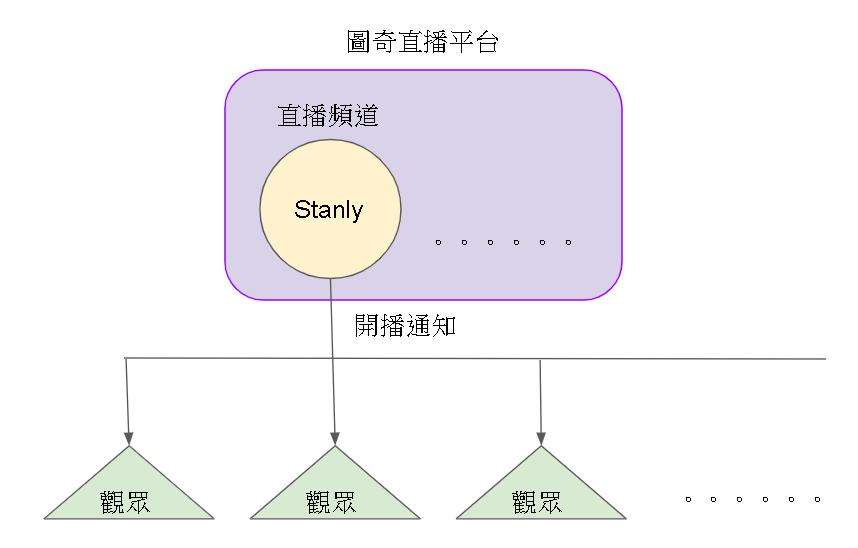

Observer Pattern(觀察者模式)
觀察者模式應該是初入設計模式都會碰到的設計方法，說穿了其實就是圍繞在觀察者(訂閱者)與被觀察者(主題)之間的互動關係，為了能更有效率的管控而誕生的設計模式。
適合套用觀察者模式情境
- 存在觀察者(訂閱者)與被觀察者(主題)之間關係(廢話XD)
範例情境：實況主(史丹利)上線後通知觀眾
- 觀眾可以隨時訂閱或退訂

定義觀察者介面
1
2
3
4
5
6//// 觀察者Interface
public interface IObserver
{
//// 廣播
string BoradCast();
}定義被觀察者介面
1
2
3
4
5
6
7
8
9
10
11
12
13
14
15//// 被觀察者介面
public abstract class IObserverable
{
//// 被觀察者名稱
public string ObserverableName { get; set; }
//// 加入觀察者
public abstract void Add(IObserver observer);
//// 移除觀察者
public abstract void Del(IObserver observer);
//// 通知
public abstract IEnumerable<string> Notify();
}觀眾結構實作
1
2
3
4
5
6
7
8
9
10
11
12
13
14
15
16//// 圖奇觀眾
public class TwitchUser : IObserver
{
//// 訂閱的實況主
private IObserverable observerable;
//// 建構子
public TwitchUser(IObserverable observerable)
{
this.observerable = observerable;
}
//// 實況主上線
public string BoradCast()
=> $"{this.observerable.ObserverableName} Online";
}實況主頻道實作
1
2
3
4
5
6
7
8
9
10
11
12
13
14
15
16
17
18
19
20
21
22
23
24
25
26
27
28//// 圖奇實況主
public class Twitcher : IObserverable
{
//// 訂閱的觀眾
private List<IObserver> observers;
//// 建構子
public Twitcher()
{
this.observers = new List<IObserver>();
}
//// 觀眾訂閱
public override void Add(IObserver observer)
{
this.observers.Add(observer);
}
//// 觀眾退訂
public override void Del(IObserver observer)
{
this.observers.Remove(observer);
}
//// 通知觀眾
public override IEnumerable<string> Notify()
=> this.observers.Select(o => o.BoradCast());
}擬定劇本實作單元測試
1
2
3
4
5
6
7
8
9
10
11
12
13
14
15
16
17
18
19
20
21
22
23
24
25
26
27
28
29
30
31
32
33
34[TestMethod]
public void TestMethod1()
{
//// 建立直播主頻道-以史丹利為例
IObserverable stanly = new Twitcher();
stanly.ObserverableName = "史丹利";
//// 建立卡特觀眾
IObserver carter = new TwitchUser(stanly);
stanly.Add(carter);
//// 建立花輪觀眾
IObserver gear = new TwitchUser(stanly);
stanly.Add(gear);
//// 史丹利上線廣播通知
var notifyMsg = stanly.Notify();
Assert.IsNotNull(notifyMsg);
Assert.AreEqual(notifyMsg.Count(), 2);
Assert.AreEqual(notifyMsg.First(), "史丹利 Online");
//// 史丹利改名為肥豬王-史丹利
stanly.ObserverableName = "肥豬王-史丹利";
notifyMsg = stanly.Notify();
Assert.IsNotNull(notifyMsg);
Assert.AreEqual(notifyMsg.Count(), 2);
Assert.AreEqual(notifyMsg.First(), "肥豬王-史丹利 Online");
//// 移除花輪觀眾
stanly.Del(gear);
notifyMsg = stanly.Notify();
Assert.IsNotNull(notifyMsg);
Assert.AreEqual(notifyMsg.Count(), 1);
}